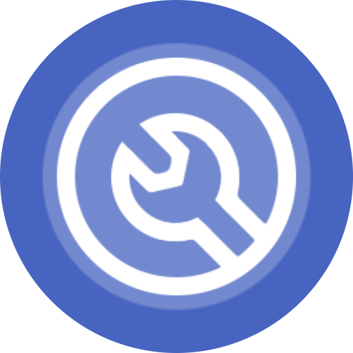
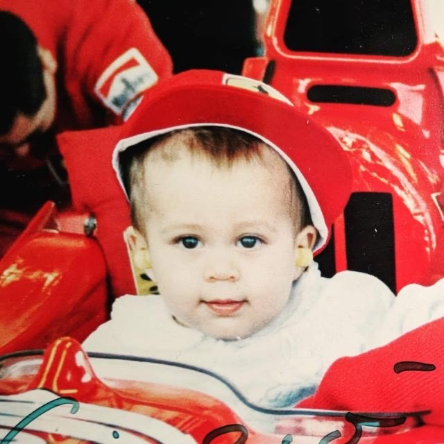

 Made by @gcantoni
Pixel Tuner
A minimal and easy-to-use app to access a hidden menu in the system that houses a lot of options that can make your phone more pleasant to use such as hiding the status bar icons, enabling shortcuts and more. The systemUI tuner is available on every device unless the original equipment manufacturer has deleted it.
With built in OS integration
📥 Downloads
300K